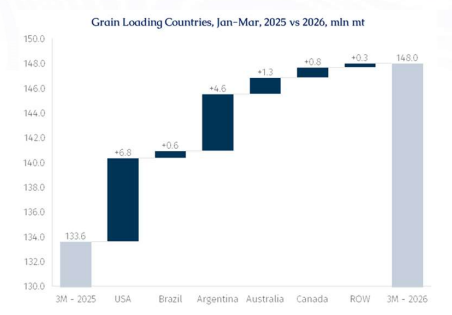
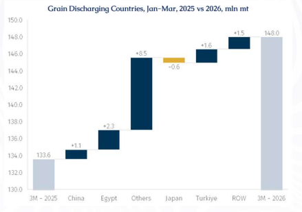
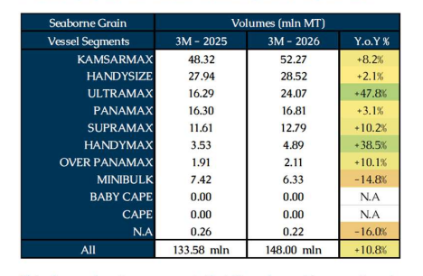
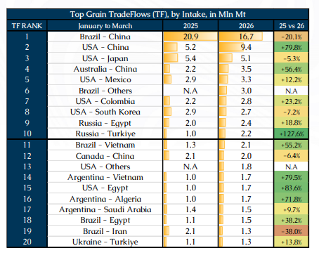
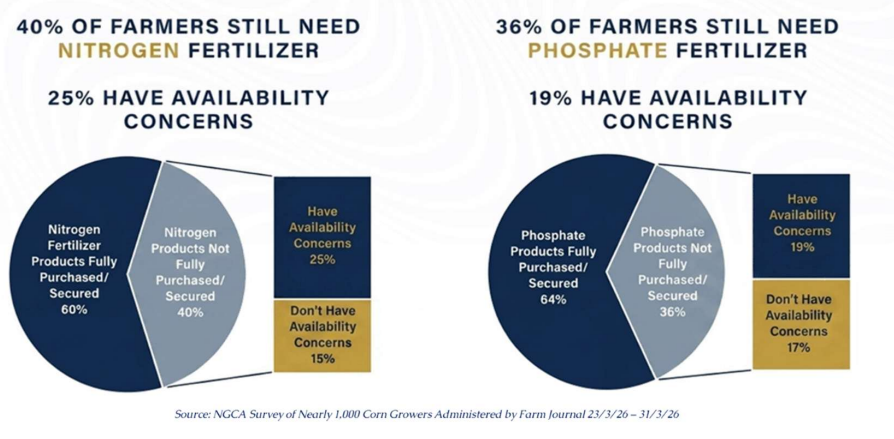

So far, dry freight markets for subcapes have remained relatively firm compared to 1Q25, despite the risk-off sentiment in March driven by the Iran conflict. This resilience can be partly attributed to the continued bypassing of the Panama and Suez Canals for USG grain shipments to the Far East as well as a welcome rebound in global grain volumes in 1Q26.
According to AXSMarine data, most ex-USG grain loadings to Far East, primarily on Kamsarmaxes and Panamaxes, did not transit via Panama or Suez Canal in 1Q26, instead diverting via the Cape of Good Hope. This has materially increased ton-miles for such voyages and provide bottom-up support (to a certain extent).

Meanwhile, global seaborne grain loadings staged a strong recovery in 1Q26, with AXSMarine data showing volumes rising 10.8% y-o-y from 133.6 mln mt to 148.0 mln mt.
However, there are several nuances that are not immediately apparent at first glance.
The US and Brazil together accounted for nearly 50% of total grain shipments in 1Q26, with volumes of 38.9 mln mt and 34.9 mln mt, respectively. This marked the first time since 2022 that the US had reclaimed the top spot from Brazil in the first calendar quarter. As such, a clear understanding of these two agricultural markets will be imperative for evaluating subcapes prospects.
In short, volume growth was led by the major suppliers, particularly the US (+21.0%), Argentina (+32.6%), Australia (+12.6%), Russia (+35.1%), and France (+45.3%). Overall, the top ten exporters expanded shipments by 12.2% y-o-y. In contrast, Brazil’s growth was a pedestrian +1.7%.

On the demand side, however, China - the world’s largest grain importer - accounted for only a limited share of the total increase, with imports rising by just 1.1 mln mt. Instead, the bulk of the additional volumes was absorbed by the rest of the world, with shipments to markets outside the major buyers increasing by 8.5 mln mt and becoming more fragmented.

This demand pattern suggests that the rebound in overall grain trade has not translated proportionately into stronger demand for larger vessels on long-haul routes. While Kamsarmax and Panamax loadings rose by 8.2% and 3.1%, respectively, the strongest gains were recorded in the smaller geared segments, with Ultramaxes up 47.8% and Handymaxes up 38.5%. The result is that tonne-days growth for global grain shipments remained below 1%, markedly lagging the 10.8% increase in cargo volumes.
Meanwhile, March was a hectic month for the global grains and oilseeds market. War-related uncertainty, strained US-China relations, Brazilian harvest and shipping disruptions, rising energy costs, and shifting US biofuel policy all pulled the market in different directions. At the same time, shipping logistics became more complicated and nitrogen fertilizer prices surged by nearly 40% over the month, adding further pressure across the agricultural sector.
A major source of disruption emerged in mid-March, when reports surfaced that Cargill had halted soybean exports from Brazil to China after Brazil introduced revised phytosanitary inspection procedures at China’s request. Under the new system, Brazilian authorities moved away from representative sampling, the standard market practice, and instead began conducting their own sampling. This created inconsistencies in inspection results and, in some cases, prevented the issuance of phytosanitary certificates. Without those certificates, vessels could not discharge cargo in China, raising the possibility that some shipments originally bound for China would need to be redirected elsewhere.

These tensions came at a sensitive moment. The first quarter is typically the seasonal upswing for Brazilian grain exports, and China remains the dominant buyer. Of Brazil’s 34.9 mln mt in 1Q26, around 48% went to China. Even so, Brazilian shipments were, down by 20.1% from 1Q25, while exports to other destinations rose.
The weaker flow to China aligned with reports that Chinese customs had tightened scrutiny of Brazilian soybean cargoes, especially for weed seeds, pesticide coatings, and heat damage. One multinational trader reportedly suspended purchase for China-bound shipments, while COFCO sought further clarification from Brazilian authorities. At one point, more than 20 vessels, carrying an estimated 1.2 mln mt, were said to be delayed by inspections. Importers in China were also warned that clearance times could increase from the usual seven days to as long as 20 to 25 days.
By late March, however, Chinese authorities clarified that they would not impose a zero-tolerance policy on weeds in Brazilian soybean shipments. That announcement helped ease concerns over severe export backlogs, particularly as Brazil was in the middle of its peak shipping season. Chinese and Brazilian officials are now expected to continue bilateral discussions to establish an agreed tolerance threshold for weeds and reduce uncertainty going forward. On face value, this development could provide the boost for ECSA fronthaul shipments heading into mid/late 2Q26.
Yet, playing the devil’s advocate, behind the inspection issues lies a broader concern about China’s soybean market. Last year, a flood of Brazilian soybeans depressed prices for soybean oil and meal, wiped out processing margins, encouraged overexpansion in hog and egg production, and left the domestic edible oil market oversupplied. China even became a soybean oil exporter to Indian, South Korea and Southeast Asia. On a relevant note, the Chinese-based Muyuan Foods, the world's largest hog producer, sold 2.65% fewer hogs in March 2026 but prices plunged 30.7%. Another sign that China is still plagued by deflation and weak consumption.
Faced with the prospect of another heavy wave of arrivals this year, Chinese policymakers may have an incentive to slow the pace of imports. Adding to the pressure, much of the 12 mln mt of US soybeans that President Xi reportedly pledged to buy last October were still in transit. All eyes will be on the Beijing meeting between President Trump and President Xi on 14–15 May, to assess whether soybean diplomacy can outweigh broader economic considerations.
Meanwhile, US policy added another bullish factor for vegetable oils. The latest biofuel policy announced by the Trump administration calls for a 60% increase in biomass-based diesel blending, including renewable diesel, by 2026 compared with 2025 levels. This is expected to significantly increase demand for soybean oil and waste oils. That means that potentially more domestic soybeans will remain in the US in the form of crush, meal, and feedstock fuel. For corn, the effect is less dramatic, since ethanol demand remains broadly stable and export prospects continue to depend more on global competition, especially from South America.
On the other hand, based on recent surveys conducted by the National Corn Growers Association (NCGA), US corn farmers are growing increasingly concerned about fertilizer affordability and availability for the 2027 growing season. Fertilizer markets have tightened since the Middle East conflict began, pushing retail prices higher and worsening affordability even where prices remain below 2022 peaks. In corn terms, growers now need a record 185 bushels to purchase one ton of urea, reflecting fertilizer price increases paired with much lower corn prices.
In a typical farming cycle, input budgets and purchases for the next crop are finalized during the current production year. As a result, many farmers had already secured some or all of their fertilizer needs for this planting season before the closure of the Strait of Hormuz pushed prices higher. However, while fertilizer is often locked in well in advance, pre-purchasing diesel fuel is far less common. This leaves farmers more exposed to rising fuel costs, adding further strain in what was already expected to be another challenging year for US agricultural profitability.
Looking ahead to the 2026 crop, a majority of US farmers appear relatively well covered on inputs. Approximately 60% report that their nitrogen fertilizer needs are fully purchased or secured. Among the remaining 40% who have not fully locked in supplies, about a quarter express concern over availability. A similar pattern is seen in phosphate fertilizers, where 64% of farmers have fully secured their requirements, while 19% of those still uncovered report potential supply constraints. Overall, while most farmers are insulated from immediate disruptions, a meaningful minority remains exposed to both availability risks and potentially higher input costs.

Consequently, while some US farmers remain concerned about the 2026 crop - with the USDA noting a potential shift from corn to soybeans planting - nearly twice as many are more worried about fertilizer price and availability in 2027, signalling rising anxiety over future supply conditions. To prevent the 2027 crop from being hit not only by affordability issues but also by supply constraints, measures strengthening supply resilience and ensuring continued product flow to US farms will be critical ahead of the next key purchasing and import window.
The forward picture for US grain exports prospects is extremely uncertain. For instance, if high prices or supply constraints lead farmers to reduce fertilizer use, corn yields could decline, limiting exportable supply and resulting in softer US corn shipments. At the same time, concerns over food availability could trigger early or precautionary buying, supporting shipping demand.